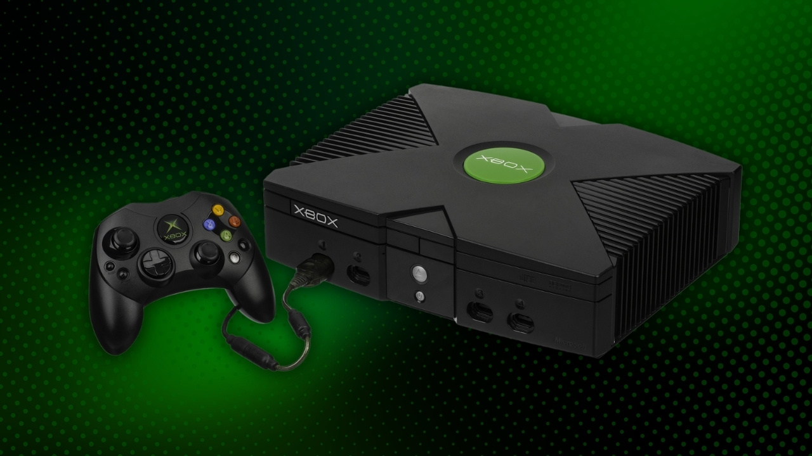
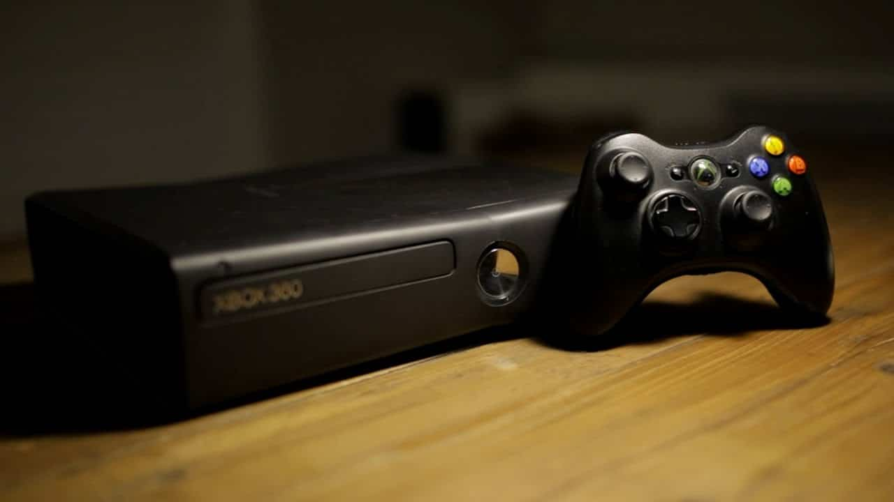
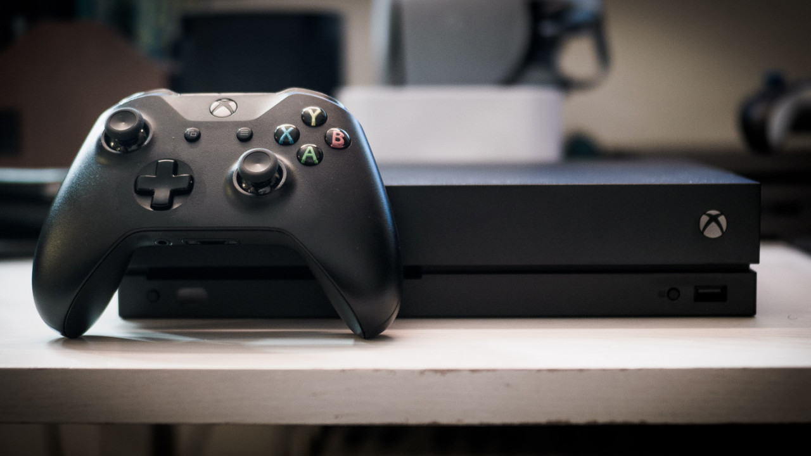
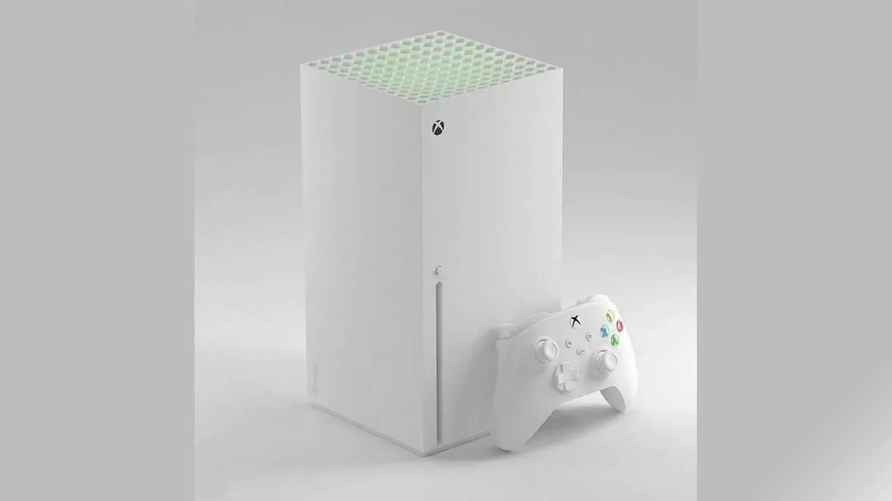

When Microsoft entered the gaming market in 2001, many doubted the company could compete with giants like Sony and Nintendo. Yet, with bold hardware, innovative online features, and a focus on powerful experiences, Xbox carved out its place as a cornerstone of modern gaming. From the massive “Duke” controller of the original console to the sleek ecosystem of the Xbox Series X|S, the brand has continuously evolved while shaping the way we connect, play, and share.
Microsoft launched the original Xbox in 2001, making a dramatic debut with the inclusion of an internal hard drive (a first for consoles) and built-in Ethernet support. These innovations laid the groundwork for Xbox Live, the online service that would redefine multiplayer gaming just a year later.
Despite its bulky design and steep competition from the PS2, the Xbox gained traction with landmark titles like Halo, which not only sold consoles but also set the standard for first-person shooters on consoles.
“The Xbox is the future of video games.” – Bill Gates
The Xbox 360 was the true breakthrough for Microsoft. Launching a year ahead of the PS3, it captured gamers with a strong library, smooth online play, and of course, the introduction of Achievements—a feature that would influence the entire industry.
Xbox Live flourished on the 360, creating a digital community of millions. While the infamous “Red Ring of Death” hardware failures plagued early models, Microsoft’s support policies and aggressive software lineup (from Gears to ME) cemented the 360 as one of the most beloved consoles of its generation.
“It’s not just a console—it’s your entertainment hub.” – Microsoft, 2005 launch
The Xbox One had a rocky start. Its initial focus on being an “all-in-one entertainment device” rather than a games-first console alienated many fans. The launch reveal, centered on television integration and mandatory Kinect usage, was met with criticism and allowed Sony’s PS4 to dominate early on.
However, over time, Xbox One redeemed itself with consumer-friendly programs like Backward Compatibility, the rise of Xbox Game Pass, and a stronger emphasis on player choice. The system laid the foundation for Microsoft’s long-term strategy: making Xbox more of an ecosystem than just a single console.
“TV, TV, TV.” – Don Mattrick, Xbox One Reveal
In 2020, Microsoft launched the Xbox Series X and its smaller sibling, the Series S. With lightning-fast load times thanks to SSD technology, support for 120fps gaming, and a strong push for cloud-based play via Xbox Cloud Gaming, the new consoles represented Microsoft’s most ambitious vision yet.
What sets this era apart is Microsoft’s focus on services over exclusivity. With Game Pass becoming a central pillar, players gained access to a vast library spanning generations, making Xbox less about one box and more about a seamless gaming ecosystem.
“Power Your Dreams.” – Xbox Series X|S Motto